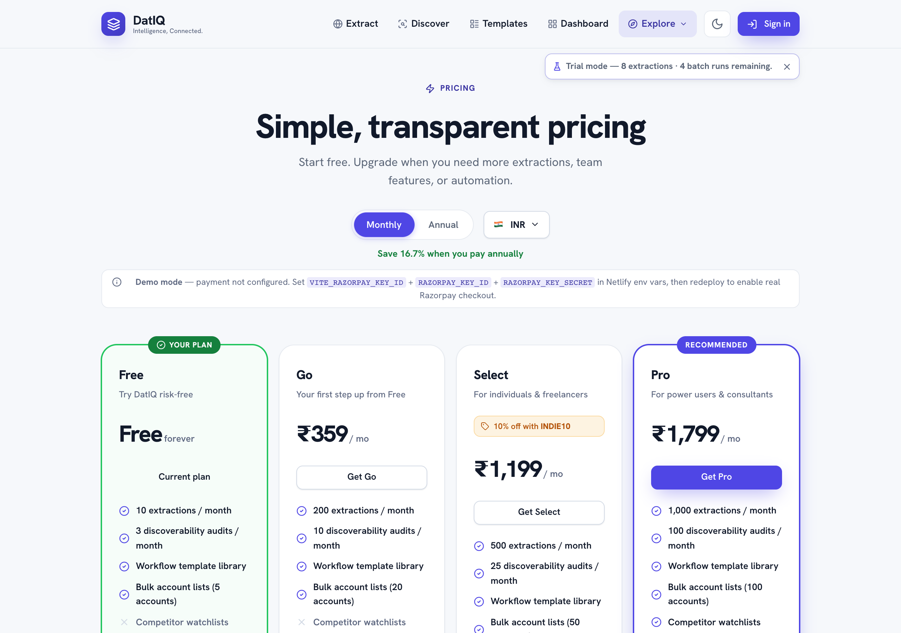

Plans, usage & billing
DatIQ offers a free tier plus paid plans for heavier use.
DatIQ offers a free tier plus paid plans for heavier use. Pricing is shown in your local currency where supported, with monthly and annual billing (annual saves you money).

- Free — a monthly allowance of extractions, full core features, and a one-time bonus credit when you sign up.
- Paid plans (Go, Select, Pro, Business, Agency) — higher allowances, larger batches, more workspaces, and additional capabilities such as API access on Business and above.
- Top-up bundles — add extra batch capacity to your current plan without changing tiers.
- Enterprise — custom volume and terms; contact sales.
Manage everything from the Account screen: your current plan, usage this month, usage alerts, coupon entry, and payment history. Before any charge, a confirmation shows the full breakdown (including taxes where applicable).
A detailed plan comparison matrix sits below the plan cards on the pricing page — it lists every capability by tier so you can see at a glance which plan unlocks what.
Invoices & receipts
Every completed payment produces its own numbered, itemised document, listed under Invoices & receipts on the Account screen.
- You get it automatically. A copy is emailed to you as a PDF attachment as soon as the payment
completes — you do not have to ask for it or download it to have a copy.
- View, download, or re-send. Open any document to see the full breakdown line by line, download
the PDF again, or have it emailed to you a second time. Re-sending always goes to the address on your account, never to an address typed into the page.
- Receipt or tax invoice. Where DatIQ is registered for tax in your region, the document is a full
tax invoice showing the tax split; elsewhere it is a payment receipt that states it is not a tax invoice. Either way the amounts reconcile exactly to what you were charged.
- Documents are permanent records. An issued document is never edited or re-numbered. If something
needs correcting, a separate credit note is issued against it, so your records and ours always match.
- They outlive the subscription. Your billing documents stay available to you even if you cancel or
your plan lapses.
If a plan lapses
If a paid plan ends without renewing, the account moves through clearly-signposted stages rather than disappearing:
- Suspended — a banner explains the state. Your saved data is intact, and renewing restores full
access immediately.
- Deactivated — after a further period, if still unrenewed.
You are emailed at each stage, and again before anything is removed, so a lapse is never silent. Scheduled monitoring pauses while a plan is lapsed and resumes automatically when you renew — schedules you paused yourself stay paused. Renewing at any stage puts everything back.